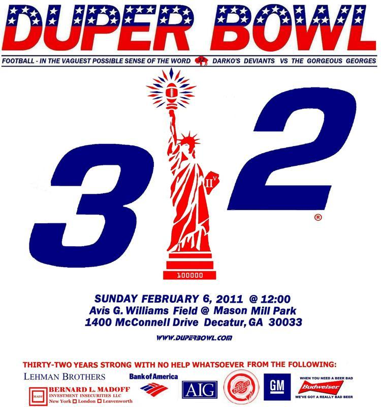

Duper Bowl XXXII
Sunday, February 6th, 2011Click on the image to see the full-sized picture.
| Old DB Field From Endzone |  |
| Seat on 50 Yard Line at Old Field |  |
| New DB Field Circa 1968 |  |
| Referee Jersey |  |
| Georges Jersey |  |
| Deviants Jersey |  |
| Somebody Cover That Guy |  |
| George Stares at Camera |  |
| Wade Goes Deep |  |
| Hit Me I'm Open |  |
| Deviants Kickoff |  |
| Phil Tests Out Bionic Knee |  |
| Georges Await Kickoff |  |
| The Flying V With Wade on Point |  |
| Mixing it Up |  |
| Deviants Make the Walk as Ref Checks Time |  |
| Ref Checks Time Again |  |
| Fans in the Stands |  |
| Jim, Gordo, and John |  |
| Gordo and John |  |
| Clair and Some Future DuperBowlers |  |
| John Has a Halftime Beer as Gordo Checks the Time in Background |  |
| Second Half Action |  |
| Eric is Open Over the Middle |  |
| Georges on the Move |  |
| Power Sweep Left |  |
| Paul Circles Under the Ball |  |
| Georges in the Huddle Deviants at the Line |  |
| Controversial Safety Non-Call |  |
| Argument Following Controversial Safety Non-Call |  |
| Gordo Checks Time Yet Again and Wonders if Game Will Ever End |  |
| Georges Huddle |  |
| Eric Ready to Make A Reception |  |
| Late Sack by the Georges |  |
| More Late Action |  |
| The Last Play - Deviants Short by a Yard |  |
| Team Photo |  |

The Poster
Home | Hall of Fame